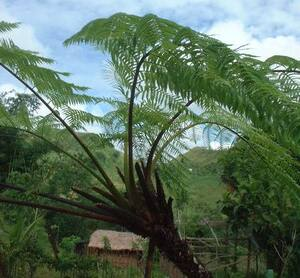
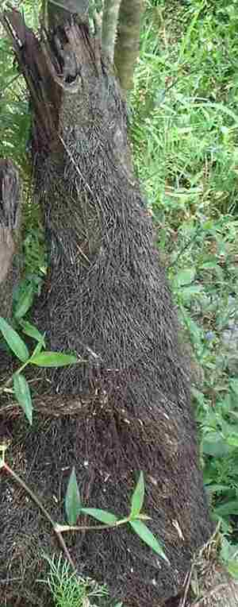

anutung  
/ʔanutuŋ/
n.
for plantfern
Ka anutung iyan ka leew ne kayu ne malapung ka dewun ne egpekeiling te dewun te pulà. Meitem ka lawa kayi ne mahalanglang wey duhiyen ka pakew te dewun kayi. Kaayun ne eggimuwen ne seini ne unturanan te me bulak wey egpatubuan te me leew ne bulak.
Egpameled e pad te anutung su igbelegyè ku te iney ni Punges ne egpameli te anutung.
I will cut down anutung trees and sell those to Punges’ mother who is a buyer of anutung.
Due migsesaleg ne limuken dutu te anutung ne eggumgumen ku angkuwa.
There is fruit dove lying its egg in anutung tree and I will put a trap on it afterwards.
Egpanguwe e pad te dewun te anutung su iyan ku iglulubung.
I will take some anutung leaves because I will make a hunting hut out of it.
Eng. giant fern; fern tree
Online dict status: -
Usage level: M
Updated by: TME
Last updated: 29/Jun/2010
This page last updated: 19/May/2012
Copyright © 2009-2010, Matigsalug Language Christian Association, Inc